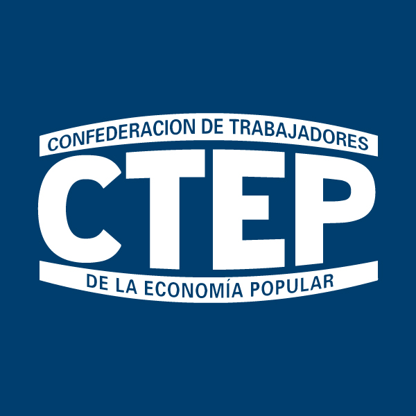
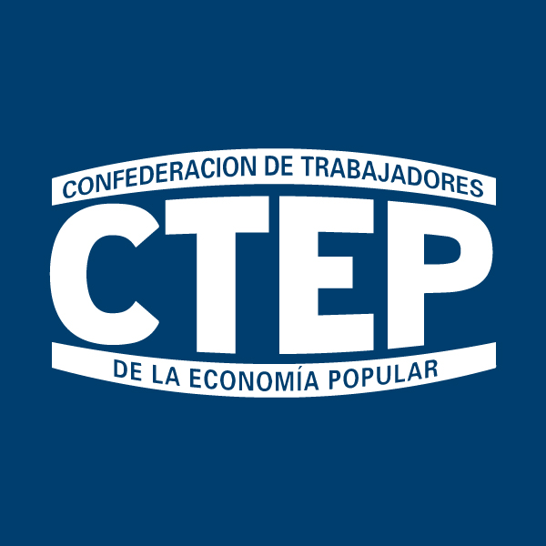
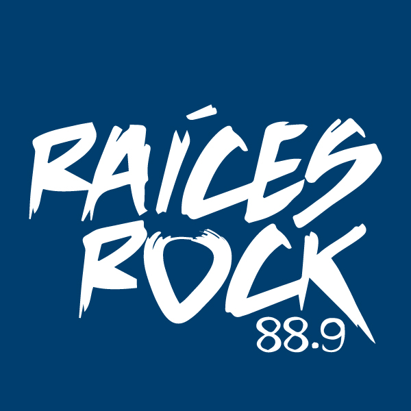
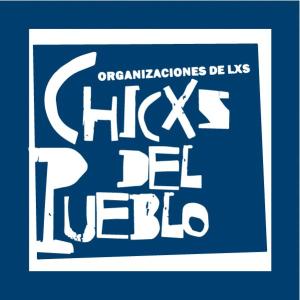
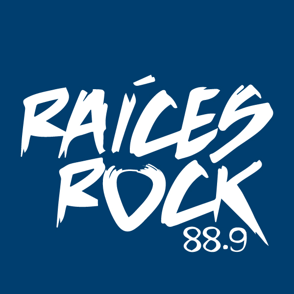
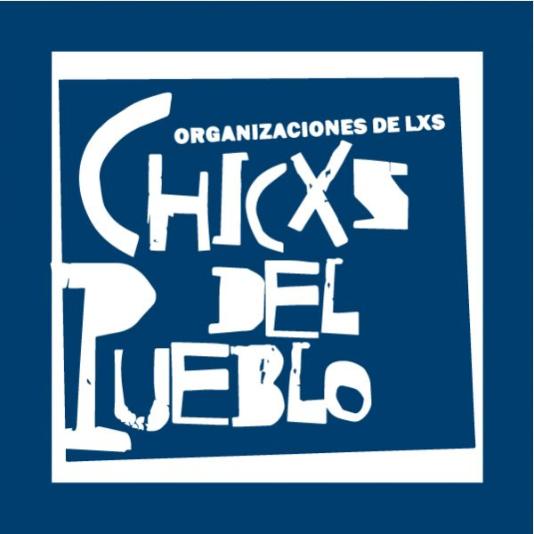

Infancia
Trabajamos con niños y niñas de las edades más tempranas.

Educación
Buscamos que nuestros niños refuerzen su educación.

Recreación
Queremos que puedan compartir un momento entre pares y pasarla bien.

Talleres
Les ofrecemos diferentes tipos talleres para incentivar su creatividad.
Nuestra Agenda
Todos los Lunes, Miércoles y Viernes de 11 a 12.30hs. en el centro de salud comunitario Tekó Porá.
Todos los Viernes y Sabados desde las 17 a 19hs. Los esperamos para compartir la merienda y realizar diferentes actividades sea deportivas, educativas, artisticas para que nuestros chicos se diviertan.
Nuestro gabinete social funciona de lunes a viernes en el horario de 08.00 a 14.00 Hs. Es un espacio que tiene como objetivo fomentar la inclusión social mediante orientación y acompañamiento a personas y familias de la comunidad, fortaleciendo el acceso a derechos sociales básicos.
Talleres Ofrecemos desde nuestra organización una variedad de talleres deportivos, artísticos y educativos, con el objetivo de construir espacios de encuentro, recreación e intercambios; apuntando a fortalecer la autonomía y el desarrollo de capacidades individuales y colectivas.
Nosotros

Comedor
Nuestro comedor, está integrado por madres de niños que asisten día a día a nuestra institución. En él se sirven cerca de 400 porciones de desayuno y almuerzo por día para tratar de garantizar una alimentación saludable y nutritiva a las familias que concurren a nuestra asociación.

Gabinete Psico-Social.
El gabinete social acompaña la realidad social de la gente del barrio dando respuestas a las necesidades más inmediatas y sosteniendo a los grupos más vulnerables.
Talleristas.
Son actores institucionales formados en diferentes disciplinas, que cumplen un rol importante en lo que respecta al intercambio de aspectos educativos, artísticos y deportivos. Mediante los talleres aportan a la construcción cultural e identitaria.
Formamos parte de:
 
   
 